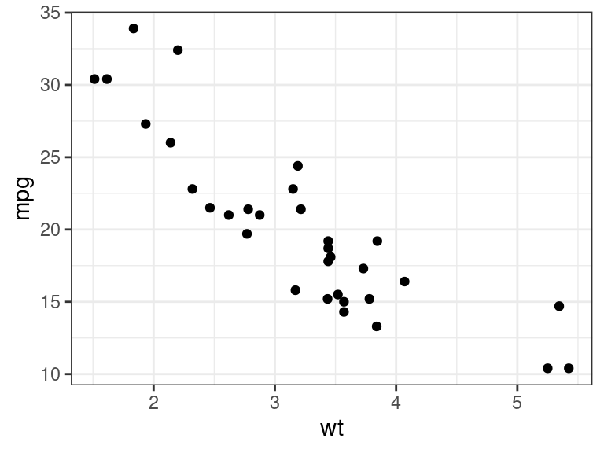
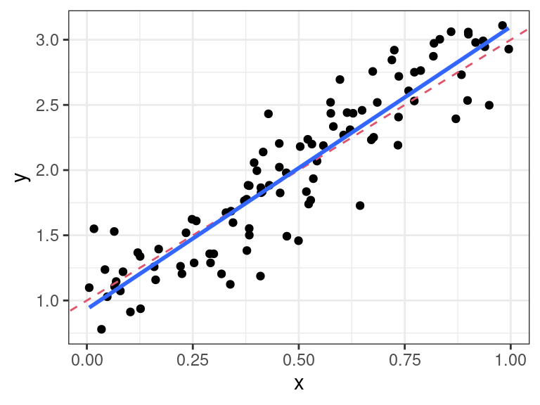

S3 Objects
David Gerard
2022-01-31
Learning Objectives
- Chapter 13 of Advanced R
- Most notes taken from Hadley’s book. Thank you so much.
Motivation
S3 is the most commonly used object-oriented programming (OOP) system in R.
Most of the common data types you are used to are S3.
# Data frames are S3 sloop::otype(mtcars)## [1] "S3"# tibbles are S3 mt_tb <- tibble::as_tibble(mtcars) sloop::otype(mt_tb)## [1] "S3"# lm objects are S3 lmout <- lm(mpg ~ wt, data = mtcars) sloop::otype(lmout)## [1] "S3"# ggplot2 plots are S3 pl <- ggplot2::ggplot(mtcars, ggplot2::aes(x = wt, y = mpg)) + ggplot2::geom_point() sloop::otype(pl)## [1] "S3"# tidymodels use S3 tdout <- parsnip::linear_reg() |> parsnip::set_engine("lm") |> parsnip::fit(mpg ~ wt, data = mtcars) sloop::otype(tdout)## [1] "S3"# Factors are S3 x <- factor(c(1, 2, 3)) sloop::otype(x)## [1] "S3"# Dates are S3 x <- lubridate::make_date(year = 1970, month = 1, day = 1) sloop::otype(x)## [1] "S3"If you are creating a package and you want OOP features, you should use S3 unless
- You work in a large team, or you need to contribute to Bioconductor (use S4).
- Modify-by-reference is important (use R6).
This is since most R programmers are used to S3 (intuitively) and are not used to S4 or R6.
S3 Basics
An S3 object is any variable with a
classattribute. This is the full definition.S3 objects may or may not have more attributes.
E.g. the
factorclass always has thelevelsattribute.x <- factor(c("A", "B", "B", "A", "C", "A")) attributes(x)## $levels ## [1] "A" "B" "C" ## ## $class ## [1] "factor"You can get the underlying base type by
unclass().unclass(x)## [1] 1 2 2 1 3 1 ## attr(,"levels") ## [1] "A" "B" "C"Functions can be S3 objects as well as long as they have the
classattribute.sout <- stepfun(1:3, 0:3) sloop::otype(sout)## [1] "S3"class(sout)## [1] "stepfun" "function"S3 objects behave differently when passed to a generic function, a special type of function meant to provide different implementations based on the S3 class of the object.
Use
sloop::ftype()to see if a function is generic. If it has the word “generic” is anywhere, it can be used as an S3 generic.These are all S3 generics
sloop::ftype(print)## [1] "S3" "generic"sloop::ftype(summary)## [1] "S3" "generic"sloop::ftype(plot)## [1] "S3" "generic"But these are not:
sloop::ftype(lm)## [1] "function"sloop::ftype(stop)## [1] "internal"Generic functions behave differently depending on the class of the object.
print(mt_tb)## # A tibble: 32 × 11 ## mpg cyl disp hp drat wt qsec vs am gear carb ## <dbl> <dbl> <dbl> <dbl> <dbl> <dbl> <dbl> <dbl> <dbl> <dbl> <dbl> ## 1 21 6 160 110 3.9 2.62 16.5 0 1 4 4 ## 2 21 6 160 110 3.9 2.88 17.0 0 1 4 4 ## 3 22.8 4 108 93 3.85 2.32 18.6 1 1 4 1 ## 4 21.4 6 258 110 3.08 3.22 19.4 1 0 3 1 ## 5 18.7 8 360 175 3.15 3.44 17.0 0 0 3 2 ## 6 18.1 6 225 105 2.76 3.46 20.2 1 0 3 1 ## 7 14.3 8 360 245 3.21 3.57 15.8 0 0 3 4 ## 8 24.4 4 147. 62 3.69 3.19 20 1 0 4 2 ## 9 22.8 4 141. 95 3.92 3.15 22.9 1 0 4 2 ## 10 19.2 6 168. 123 3.92 3.44 18.3 1 0 4 4 ## # … with 22 more rowsprint(lmout)## ## Call: ## lm(formula = mpg ~ wt, data = mtcars) ## ## Coefficients: ## (Intercept) wt ## 37.29 -5.34print(pl)
This is not implemented by
if-elsestatements. That would be inefficient because only the authors ofprint()(i.e. the R Core team) could add new functionality to new S3 objects. The idea of using generic functions allows us (new developers) to define new functionality to the same generics.The implementation of a generic for a specific class is called a method.
The act of choosing a method from a generic is called method dispatch. Use
sloop::s3_dispatch()to see this process.sloop::s3_dispatch(print(mt_tb))## print.tbl_df ## => print.tbl ## * print.data.frame ## * print.default- The
*means the method exists but is not used. - The
=>means the method exists and is used. - So above, it did not find a method for
tbl_df, so it moved on totblwhich does have a method and used it. So it did not go on to look for other methods (data.frameor thedefaultmethod), even those classes both have methods.
- The
Below there is no
aperm()method for matrices, integers, or numerics, so it used the default one, which is for arrays.mat <- matrix(1:12, nrow = 4, ncol = 3) sloop::s3_dispatch(aperm(mat, c(2, 1)))## aperm.matrix ## aperm.integer ## aperm.numeric ## => aperm.defaultYou can access specific methods by
generic.class(). E.g.stats:::print.lm(lmout)## ## Call: ## lm(formula = mpg ~ wt, data = mtcars) ## ## Coefficients: ## (Intercept) wt ## 37.29 -5.34aperm.default(mat, c(2, 1))## [,1] [,2] [,3] [,4] ## [1,] 1 2 3 4 ## [2,] 5 6 7 8 ## [3,] 9 10 11 12But these are often not exported and should generally not be accessed directly by the user, or other developers.
Lots of methods have
.in the middle. But not all functions with.are methods. E.g.read.csv()andt.test()are not methods of generic functions.read.csv()is just a function with a dot in the name, andt.test()is just a generic function with a dot in the name. These functions were created before S3, which is why they are named poorly.You can confirm that a function with a
.in it is a method also withsloop::is_s3_method().sloop::is_s3_method("read.csv")## [1] FALSEsloop::is_s3_method("t.test")## [1] FALSEsloop::is_s3_method("print.default")## [1] TRUEBecause of the important role of
., you should never name variables or non method functions with a dot in them.To find all of the methods of a generic, use
sloop::s3_methods_generic().sloop::s3_methods_generic("print")## # A tibble: 309 × 4 ## generic class visible source ## <chr> <chr> <lgl> <chr> ## 1 print acf FALSE registered S3method ## 2 print AES FALSE registered S3method ## 3 print all_vars FALSE registered S3method ## 4 print anova FALSE registered S3method ## 5 print ansi_string FALSE registered S3method ## 6 print ansi_style FALSE registered S3method ## 7 print any_vars FALSE registered S3method ## 8 print aov FALSE registered S3method ## 9 print aovlist FALSE registered S3method ## 10 print ar FALSE registered S3method ## # … with 299 more rowsTo find all methods for a class, use
sloop::s3_methods_class().sloop::s3_methods_class("data.frame")## # A tibble: 55 × 4 ## generic class visible source ## <chr> <chr> <lgl> <chr> ## 1 [ data.frame TRUE base ## 2 [[ data.frame TRUE base ## 3 [[<- data.frame TRUE base ## 4 [<- data.frame TRUE base ## 5 $<- data.frame TRUE base ## 6 aggregate data.frame TRUE stats ## 7 anyDuplicated data.frame TRUE base ## 8 anyNA data.frame TRUE base ## 9 as.data.frame data.frame TRUE base ## 10 as.list data.frame TRUE base ## # … with 45 more rowsExercise: Explain the difference between each of the dots in
as.data.frame.data.frame(). How would you typically use this method? Include in your discussion calls from the functions in the{sloop}package.Exercise:
mean()is an S3 generic. What classes have a method formean(). What is the difference between them?Exercise (Advanced R): What class of object does the following code return? What base type is it built on? What attributes does it use?
set.seed(21) x <- ecdf(rpois(100, 10)) x## Empirical CDF ## Call: ecdf(rpois(100, 10)) ## x[1:14] = 4, 5, 6, ..., 16, 17Exercise: (Advanced R): What class of object does the following code return? What base type is it built on? What attributes does it use?
x <- table(rpois(100, 5)) x## ## 1 2 3 4 5 6 7 8 9 10 12 ## 1 11 17 13 11 22 8 11 4 1 1
Classes
Again, an S3 object is any object with a class attribute, that you can create with:
# Create and assign class in one step x <- structure(list(), class = "my_class") # Create, then set class x <- list() class(x) <- "my_class"You can get the class attribute by
class()(as long as it is S3).class(x)## [1] "my_class"Thous, it is a little safer to use
sloop::s3_class().sloop::s3_class(x)## [1] "my_class"You can test that an object is a certain class by
inherits().class(mtcars)## [1] "data.frame"inherits(mtcars, "data.frame")## [1] TRUEinherits(mtcars, "tibble")## [1] FALSEmt_tb <- tibble::as_tibble(mtcars) inherits(mt_tb, "tbl_df")## [1] TRUEinherits(mt_tb, "data.frame")## [1] TRUER has no checks that the structure of the class is as you intended. E.g., we can change the “data.frame” class to
"Date"and bad things will happen (i.e. R will try to use the wrong generics on the data).class(mt_tb) <- "Date" mt_tb## Error in as.POSIXlt.Date(x): 'list' object cannot be coerced to type 'double'You have to be careful about enforcing the correct structure on your class. Best practice: For any S3 class you create, you should create 3 functions to help others build and validate your class:
- A constructor to make a new object with your class, for internal use only.
- A validator that checks the structure of objects with your class.
- A helper that allows users to create objects of your class.
Constructor
Your constructor should
- Be called
new_myclass(), replacing “myclass” with the name of your class. - Have one argument for the base object (e.g. list, numeric vector, etc).
- Check the type of the base object and types of each attribute.
- Be called
E.g. if we were to create our own class to recapitulate factors, called
factor2, we would donew_factor2 <- function(x = integer(), levels = character()) { stopifnot(is.integer(x)) stopifnot(is.character(levels)) return( structure(x, levels = levels, class = "factor2") ) }We can construct a factor as follows
x <- new_factor2(c(1L, 1L, 2L, 1L, 1L), levels = c("A", "B")) x## [1] 1 1 2 1 1 ## attr(,"levels") ## [1] "A" "B" ## attr(,"class") ## [1] "factor2"
Validator
Making sure the structure of an object is what you would expect is expensive.
E.g., we need to make sure that the number of unique values in a factor is at most the number of levels in that factor.
Validator functions should:
- Be named
validator_myclass(). - Take as input just an object from your class.
- Include a bunch of assertions testing the structure of the inputted object.
- Return the original object.
- Be named
Let’s make a validator for
factor2.validate_factor2 <- function(x) { stopifnot(inherits(x, "factor2")) values <- unclass(x) levels <- attr(x, "levels") if (length(levels) < max(values)) { stop("There must be at least as many `levels` as possible values in `x`") } return(x) }validate_factor2(x)## [1] 1 1 2 1 1 ## attr(,"levels") ## [1] "A" "B" ## attr(,"class") ## [1] "factor2"
Helpers
A helper function is a user-facing function that will
- Be called
myclass(). - Call first the constructor function, then the validator function.
- Be user friendly.
- Good defaults.
- Accepts multiple types for the base object and coerces intelligently.
- Be called
Let’s do this for
factor2.factor2 <- function(x = character(), levels = unique(x)) { ind <- match(x, levels) return(validate_factor2(new_factor2(ind, levels))) } factor2(c("A", "B", "B", "A"))## [1] 1 2 2 1 ## attr(,"levels") ## [1] "A" "B" ## attr(,"class") ## [1] "factor2"Side note:
match()is a useful function. It will provide the positions of the second argument that match the values in the second argument. E.g.match(c("A", "A", "B", "A", "B"), c("A", "B"))## [1] 1 1 2 1 2Exercise (Advanced R): Write a constructor for data.frame objects. What base type is a data frame built on? What attributes does it use? What are the restrictions placed on the individual elements? What about the names?
Generics
A generic function is just one that performs method dispatch. Method dispatch is implemented through
UseMethod(), so it is really easy to create a new generic.mygeneric <- function(x, ...) { UseMethod("mygeneric") }No arguments are passed to
UseMethod()except the name of the generic.The
xis a required argument that all methods must have. You can choose to have this be a different name, to have more required arguments, or to have no required arguments.The
...allows methods of your generic to include other variables than justx.This is literally what most generic function definitions look like.
mean## function (x, ...) ## UseMethod("mean") ## <bytecode: 0x55702c91aeb0> ## <environment: namespace:base>print## function (x, ...) ## UseMethod("print") ## <bytecode: 0x55702cf0ce58> ## <environment: namespace:base>plot## function (x, y, ...) ## UseMethod("plot") ## <bytecode: 0x55702bd9c748> ## <environment: namespace:base>summary## function (object, ...) ## UseMethod("summary") ## <bytecode: 0x55702ffb1948> ## <environment: namespace:base>The key of a generic is its goals. Methods should generally align with the goals of the generic so that R users don’t get unexpected results. E.g. when you type
plot()you shouldn’t output a mean (even though S3 makes this valid behavior).How
UseMethod()works: If an object has a class vector ofc("cl1", "cl2")thenUseMethod()will first search for a method forcl1, if it does not exist it will use the method forcl2, and if that does not exist it will use the default method (there is usually one).E.g. all tibbles have class
mt_tb <- tibble::as_tibble(mtcars) class(mt_tb)## [1] "tbl_df" "tbl" "data.frame"So any generic called with a tibble will first search for a
tbl_dfmethod, then atblmethod, then adata.framemethod, then a default method (which would be for a list if applicable since tibbles are built on lists).sloop::s3_dispatch(print(mt_tb))## print.tbl_df ## => print.tbl ## * print.data.frame ## * print.defaultsloop::s3_dispatch(str(mt_tb))## => str.tbl_df ## str.tbl ## * str.data.frame ## * str.defaultsloop::s3_dispatch(summary(mt_tb))## summary.tbl_df ## summary.tbl ## => summary.data.frame ## * summary.defaultsloop::s3_dispatch(mean(mt_tb))## mean.tbl_df ## mean.tbl ## mean.data.frame ## => mean.defaultThe “default” class is not a real class, but is there so that there is always a fall back.
Methods
To create a method
- Create a function definition for
generic.method(). - Make sure you use the same arguments as the generic (but you can usually include more aguements if there is
...in the generic).
- Create a function definition for
E.g., let’s create plot and print methods for our
factor2class.print.factor2 <- function(x) { print(attr(x, "levels")[x]) return(invisible(x)) } plot.factor2 <- function(x, y = NULL) { tabx <- table(attr(x, "levels")[x]) barplot(table(attr(x, "levels")[x])) return(invisible(x)) }Now, we get better printing for
factor2’sx <- factor2(c("A", "A", "B", "B", "A", "B")) print(x)## [1] "A" "A" "B" "B" "A" "B"Note: If you don’t know, whenever you just run something and have it print to the console, that is R implicitly running
print(). So this looks better too:x## [1] "A" "A" "B" "B" "A" "B"Note: In a print method, you either call the
print()method of another S3 object, or you callcat(), which does less under the hood thanprint().We can verify that method dispatch is working appropriately
sloop::s3_dispatch(print(x))## => print.factor2 ## * print.defaultPlotting looks better too
plot(x)
You should only build methods for classes you own, or generics you own. It is considered bad manners to define a method for a class you do not own unless you own the generics.
E.g. if you define a new print method for
tbl_df, then include that in your package, that would be impolite to the tidyverse folks.A method should have the same arguments as the generic. You can have more arguments if the generic has
...in it. E.g. if you createplot(), then you must includexandy, but may include anything else.formals(plot)## $x ## ## ## $y ## ## ## $...Exercise (Advanced R): What generics does the
tableclass have methods for?Exercise: Create a new generic called
popthat will remove the last element and return the shorted object. Make a default method for any vector. Then make methods for thematrixclass that will remove the last column or row, depending on the user choice of an argument calledby.
The Design of an S3 Object
There are three most common structures for an S3 object.
In decreasing order of most common usage by you:
A list-like object, where the list represents one thing (e.g. model output, function, dataset, etc…).
- For example, the output of
lm()is a list like object that represents one model fit.
lmout <- lm(mpg ~ wt, data = mtcars) sloop::otype(lmout)## [1] "S3"typeof(lmout)## [1] "list"- I use this format all of the time for the outputs of my model fits.
- For example, the output of
A vector with new functionality. E.g.
factors andDates. You combine, print, mathematically operate with these vectors in different ways.x <- factor(c("A", "A", "B", "A", "B")) sloop::otype(x)## [1] "S3"typeof(x)## [1] "integer"Lists of equal length length vectors. E.g.
data.frames andPOSIXltobjects.POSIXltobjects are lists of years, days, minutes, seconds, etc… with theith element of each vector contributing to indicating the same moment in time.
x <- as.POSIXlt(ISOdatetime(2020, 1, 1, 0, 0, 1:3)) x## [1] "2020-01-01 00:00:01 EST" "2020-01-01 00:00:02 EST" ## [3] "2020-01-01 00:00:03 EST"typeof(x)## [1] "list"data.frameobjects are lists of vectors where each vector is a variable and theith element of each vector represents the same observational unit.
typeof(mtcars)## [1] "list"
Inheritance
Inheritance is shared behavior. You can make your new class inherit from another class so that if you did not create a method, then it will fall back on the parent method.
We call the child class the subclass and the parent class the superclass.
E.g. the
tbl_df(sub)class inherits from thedata.frame(super)class.You can simply create a subclass by including a vector of in the
classattribute.mt_tb <- tibble::as_tibble(mtcars) class(mt_tb)## [1] "tbl_df" "tbl" "data.frame"You should make sure your subclass is of the same base type as the superclass you are inheriting from. E.g. make sure anything you build off of
data.frames also has a list base type.You should make sure that you have at least all of the same attributes as the superclass you are inheriting from. E.g.
data.frames can havenamesandrow.names, and so any subclass should also have those attributes.
Next Method
NextMethod()allows you define methods for your class that use the functionality of classes that you inherit from.E.g. recall that most attributes are lost with
[.x <- factor2(c("A", "A", "B", "A", "B")) x[1]## [1] 1This is because R is using the integer version for
[and so we lose the class.sloop::s3_dispatch(x[1])## [.factor2 ## [.default ## => [ (internal)We cannot use
[inside a definition for a method because we haven’t defined it yet.## won't work `[.factor2` <- function(x, i) { return(x[i]) # but we haven't defined `[` yet } x[1] ## infinite recursionYou can define your method to use the next method by
NextMethod().NextMethod()will take the arguments inside your function definition and run them through the next method in the inheritance list. So it returns an unclassed object, that you can then pass to your constructor function.Make sure you also include the attributes in your constructor.
`[.factor2` <- function(x, i) { new_factor2(NextMethod(), levels = attr(x, "levels")) }sloop::s3_dispatch(x[1:3])## => [.factor2 ## [.default ## -> [ (internal)x[1:3]## [1] "A" "A" "B"If we did not pass
NextMethod()to our constructor, it would just run the integer subsetting:`[.factor2` <- function(x, i) { NextMethod() } x[1:3]## [1] 1 1 2
Example: Simulation
Let’s work again on an a simulation function for linear regression. We started this in the Assertions and Unit Tests lecture.
The basic function we had was as follows:
simreg <- function(x, beta0, beta1, sigma) { n <- length(x) eps <- stats::rnorm(n = n, mean = 0, sd = sigma) y <- beta0 + beta1 * x + eps return(y) }Let’s create a basic list-like class so that we can define custom print, plot, and summary methods.
new_sim <- function(x, y, beta0, beta1, sigma) { stopifnot(is.double(x), is.double(y), is.double(beta0), is.double(beta1), is.double(sigma), sigma >= 0) return( structure(list(x = x, y = y, beta0 = beta0, beta1 = beta1, sigma = sigma), class = "sim") ) }We can create a validator function to check that the specific structure is preserved
validate_sim <- function(dat) { stopifnot(is.list(dat)) stopifnot(is.double(dat$x), is.double(dat$y), is.double(dat$beta0), is.double(dat$beta1), is.double(dat$sigma)) stopifnot(length(dat$x) == length(dat$y), dat$sigma >= 0) return(dat) }Let’s re-write our function to return this S3 class.
simreg <- function(x, beta0, beta1, sigma) { n <- length(x) eps <- stats::rnorm(n = n, mean = 0, sd = sigma) y <- beta0 + beta1 * x + eps return(new_sim(x = x, y = y, beta0 = beta0, beta1 = beta1, sigma = sigma)) }This will allow us to make new a plot method
plot.sim <- function(x, y = NULL, ...) { ggplot2::qplot(x = x$x, y = x$y) + ggplot2::geom_abline(slope = x$beta1, intercept = x$beta0, lty = 2, col = 2) + ggplot2::theme_bw() + ggplot2::geom_smooth(method = "lm", se = FALSE) + ggplot2::xlab("x") + ggplot2::ylab("y") }We can also make a new summary method
summary.sim <- function(object, ...) { lmout <- lm(object$y ~ object$x) beta0_ols <- coef(lmout)[[1]] beta1_ols <- coef(lmout)[[2]] sigma_ols <- sigma(lmout) return( data.frame(parameter = c("beta0", "beta1", "sigma"), truth = c(object$beta0, object$beta1, object$sigma), ols = c(beta0_ols, beta1_ols, sigma_ols)) ) }Let’s try all of this out
dat <- simreg(x = runif(100), beta0 = 1, beta1 = 2, sigma = 0.25) plot(dat)## `geom_smooth()` using formula 'y ~ x'
summary(dat)## parameter truth ols ## 1 beta0 1.00 0.9333 ## 2 beta1 2.00 2.1661 ## 3 sigma 0.25 0.2534
Documenting S3
Generics, methods, constructors, validators, and helpers are all just regular functions, so you can document them as you would regular functions.
It is sometimes nice to have the same help file for the default method and the generic. You can do that via the
@describeIn{roxygen}tag.#' Generic Function for generic. #' #' @param x An R object. generic <- function(x, ...) { } #' @describeIn generic Default Method #' #' @param y is some default option #' generic.default <- function(x, y = NULL, ...) { }See an example usage of this for the
mean()andsummary()documentation.Exercise: Document your
pop()generic and the methods you made forpop().
Type Predicates
Whenever you make a new S3 class, you should always provide a type predict to test if an object is a certaint type.
is_sim <- function(x) { return(inherits(x, "sim")) } dat <- simreg(x = runif(100), beta0 = 1, beta1 = 2, sigma = 0.25) is_sim(dat)## [1] TRUEis_sim(mtcars)## [1] FALSE
Method Dispatch Technicalities
Every variable in R has some implicit class even if it does not have a
classattribute.This implicit class is used to define methods for these objects, and to control method dispatch when you use a base type on a generic.
sloop::s3_class()will return the implicit or explicit class of all objects.x <- c(1, 2, 3) sloop::otype(x) ## not an S3 object## [1] "base"sloop::s3_class(x) ## implicit S3 class## [1] "double" "numeric"x <- matrix(1:6, nrow = 3, ncol = 2) sloop::otype(x) ## not an S3 object## [1] "base"sloop::s3_class(x)## [1] "matrix" "integer" "numeric"So to create new matrix methods, you can do
generic.matrix <- function(...) { }even though
matrixis not an S3 class.The following functions are called “group generics”
+,-,*,/,^,%%,%/%,&,|,!,==,!=,<,<=,>=, and>.You can define methods for these group generics, but undergo what’s called double dispatch, choosing a method based on both arguments. This is what allows you to add integers and dates together. We will talk about how to do this correctly in the next lecture.
{vctrs} package
By far, the most common use for S3 objects are list-like objects to add
plot()/summary()/print()methods for folks who use your package.But what if you want to create vector-like objects (e.g.
Datesandfactors)? Hadley provides a lot of nice examples:- Percent: a double vector that prints as a percentage.
- Decimal: a double vector that always prints with a fixed number of decimal places.
- Cached sum: a double vector that caches the total sum in an attribute.
- Rational: a pair of integer vectors that defines a rational number like 2 / 3.
- Polynomial: a list of integer vectors that define polynomials like 1 + x - x^3.
- Meter: a numeric vector with meter units.
- Period and frequency: a pair of classes represent a period, or it’s inverse, frequency.
It’s a lot of bookkeeping to do this properly. The
{vctrs}package makes it a lot easier.Read the
{vctrs}vignette for more: https://vctrs.r-lib.org/articles/s3-vector.htmlThe simplest class, for percents, just changes the print method for doubles, but it is still a lot of work to get it to work:
percentconstructornew_percent <- function(x = double()) { stopifnot(is.double(x)) return(vctrs::new_vctr(x, class = "percent")) }percenthelperpercent <- function(x = double()) { x <- vctrs::vec_cast(x, double()) # tries to convert to double return(new_percent(x)) }format()method forpercent(in{vctrs}this also controls theprint()method)format.percent <- function(x, ...) { ret <- formatC(vctrs::vec_data(x) * 100, digits = 1, format = "f") ret[is.na(x)] <- NA ret[!is.na(x)] <- paste0(ret[!is.na(x)], "%") return(ret) }Allow
percentobjects to be combined with doubles (usingvec_c())# type for combination should be percent vec_ptype2.percent.double <- function(x, y, ...) { percent() } vec_ptype2.double.percent <- function(x, y, ...) { percent() } # How to cast (change type) based on operation vec_cast.percent.double <- function(x, to, ...) percent(x) vec_cast.double.percent <- function(x, to, ...) vctrs::vec_data(x)x <- percent(c(0.1, 0.2)) vctrs::vec_c(x, 0.1)## <percent[3]> ## [1] 10.0% 20.0% 10.0%Allow percents to be added/subtracted
vec_arith.percent <- function(op, x, y, ...) { UseMethod("vec_arith.percent", y) } vec_arith.percent.default <- function(op, x, y, ...) { stop_incompatible_op(op, x, y) } vec_arith.percent.percent <- function(op, x, y, ...) { # method when have two percents switch( op, "+" = , # go to next "-" = new_percent(vctrs::vec_arith_base(op, x, y)), # do double ops, then convert "/" = vctrs::vec_arith_base(op, x, y), # units cancel stop_incompatible_op(op, x, y) # * makes less sense ) }x <- percent(c(0.1, 0.1)) y <- percent(c(0.5, 0.7)) x + y## <percent[2]> ## [1] 60.0% 80.0%x - y## <percent[2]> ## [1] -40.0% -60.0%x / y## [1] 0.2000 0.1429Most folks don’t need to create new vectors, so we won’t cover this package in more detail. But it is really cool what you can do with it.
New functions
class(): Assign or get the class attribute.unclass(): Remove class attribute and obtain underlying base type.inherits(): Test if an object is an instance of a given class.sloop::ftype(): See if a function is a “regular/primitive/internal function, a internal/S3/S4 generic, or a S3/S4/RC method”.sloop::s3_dispatch(): View method dispatch.sloop::s3_methods_generic(): View all methods of a generic function.sloop::s3_methods_class(): View all methods implemented for a specific class.sloop::s3_class(): Returns implicit and explicit class.sloop::is_s3_method(): Predicate function for determining if a function is an S3 method.UseMethod(): Used in a generic to define it as a generic.NextMethod(): Apply the next method, in the method dispatch chain, of the called generic.

This work is licensed under a Creative Commons Attribution-NonCommercial 4.0 International License.